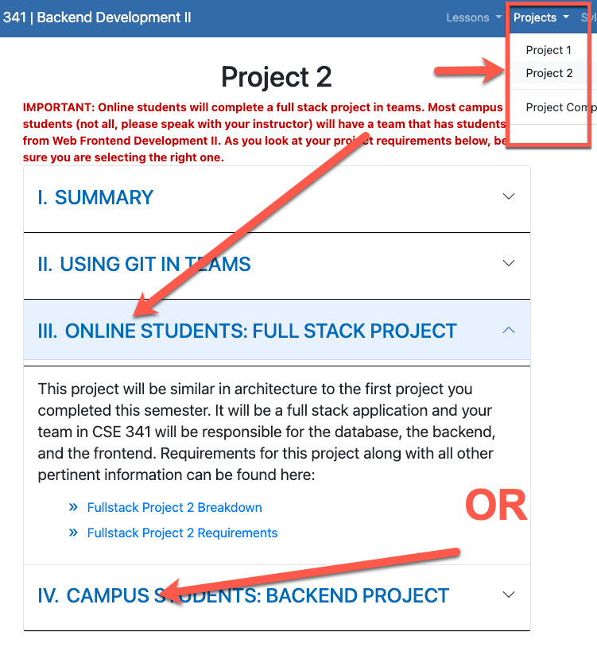

Overview
The team activity assignment this lesson is to submit a project proposal. Please review the project 2 requirements below.
With the feedback provided, finalize your risk analysis and mitigation plan and submit it to I-learn.
Assignment
-
You have had some time to get to know your team, and discuss different projects. For this assignment you will submit your official project proposal.
-
Download this template as a starting point. This template will prompt you to answer important questions and plan out how project development will look. This document is what you will submit in I-learn for this assignment. As a team assignment, only one person should submit this document in I-learn.
Please review rubric below to see how you'll be graded and to ensure you've completed each aspect of this assignment.
Rubric
| Criteria | Above and Beyond | Meets Requirements | Slightly Deficient | Significantly Deficient | Some Attempt Made | No Attempt Made | Weight |
|---|---|---|---|---|---|---|---|
| 100% | 93% | 85% | 70% | 50% | 0% | ||
| Application info | Project idea is clear and fulfills all the project requirements, with realistic ideas for stretch challenges | Project idea is clear and fulfills all the project requirements | Project idea is slightly unclear or may not fulfill a requirement | Project idea is slightly unclear and is missing some requirements | Project idea is unclear or doesn't fulfill project requirements | No project idea | 40% |
| Risk analysis | Plans for overcoming risks are appropriately detailed and a variety of risks are accounted for | Possible risks are identified and there are plans for mitigation | Risks are identified, but some plans to overcome them are missing or lacking | Some major risks are not planned for or don't have plans for mitigation | Some risks are identified, but there are no plans to mitigate them | No risk analysis was done | 40% |
| Project schedule | Each lesson has a relevant high-level task scheduled, with some tasks broken into subtasks | Each lesson has a scheduled high-level task | 1-2 tasks are missing or unclear | More than 2 tasks are missing | Tasks are unclear, irrelevant, or missing, but there is a schedule | No schedule | 20% |
Submission
Only one member of your team needs to submit your document in I-Learn